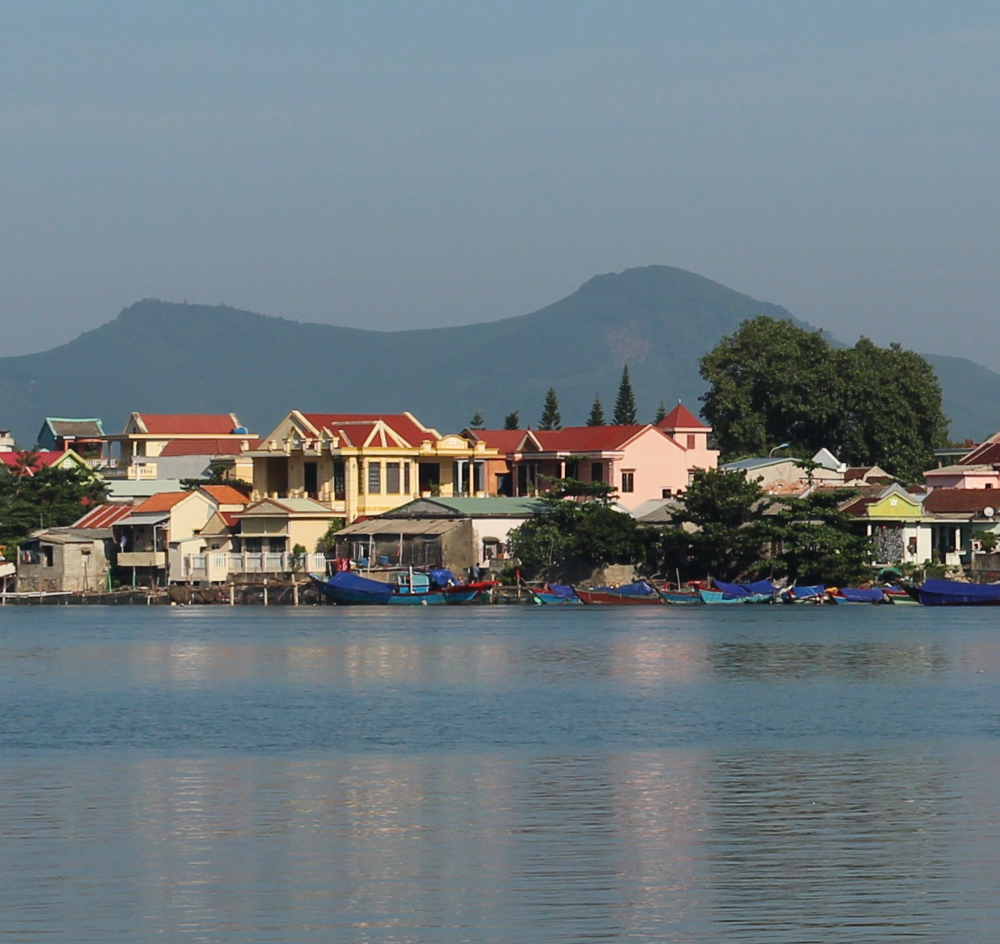
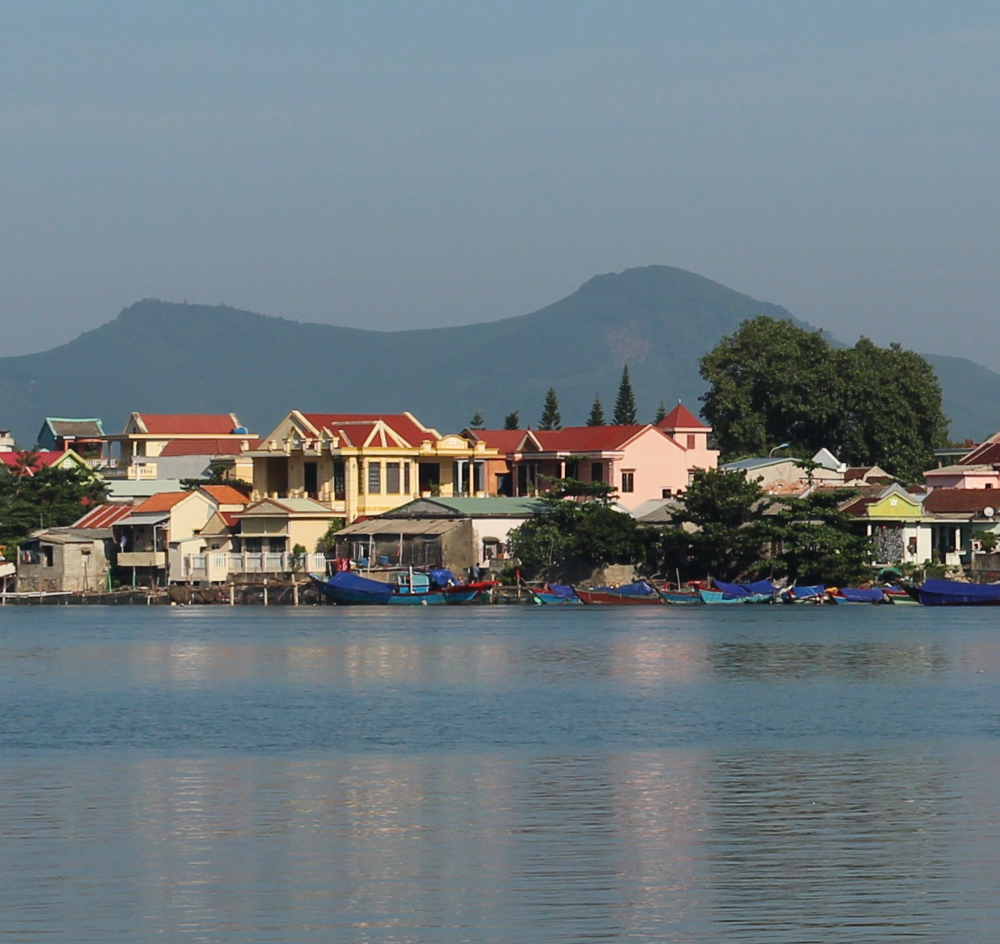

Thành Phố Huế
CHÂN MÂY - LĂNG CÔ
Nơi biển xanh ôm trọn núi non, từng con sóng vỗ về bờ cát trắng mịn, gió mang theo mùi muối và hương rừng. Ở đây, bình minh và hoàng hôn đều rực rỡ một cách dịu dàng, còn mỗi khoảnh khắc đều khiến tâm hồn muốn lặng nhìn và ghi nhớ mãi.